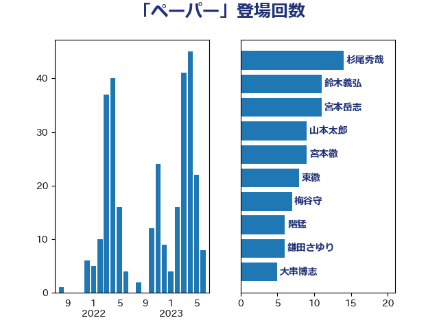

単語「ペーパー」

| 杉尾秀哉 | 立憲民主党 | 14 回 |
| 鈴木義弘 | 国民民主党 | 11 回 |
| 宮本岳志 | 日本共産党 | 11 回 |
| 山本太郎 | れいわ新選組 | 9 回 |
| 宮本徹 | 日本共産党 | 9 回 |
| 東徹 | 日本維新の会 | 8 回 |
| 梅谷守 | 立憲民主党 | 7 回 |
| 階猛 | 立憲民主党 | 6 回 |
| 鎌田さゆり | 立憲民主党 | 6 回 |
| 大串博志 | 立憲民主党 | 5 回 |
| 塩川鉄也 | 日本共産党 | 5 回 |
| 緒方林太郎 | 無所属 | 4 回 |
| 田中健 | 国民民主党 | 4 回 |
| 梅村聡 | 日本維新の会 | 4 回 |
| 山崎誠 | 立憲民主党 | 4 回 |
| 高橋千鶴子 | 日本共産党 | 3 回 |
| 高市早苗 | 自由民主党 | 3 回 |
| 音喜多駿 | 日本維新の会 | 3 回 |
| 阿部知子 | 立憲民主党 | 3 回 |
| 藤岡隆雄 | 立憲民主党 | 3 回 |
| 礒崎哲史 | 国民民主党 | 3 回 |
| 沢田良 | 日本維新の会 | 3 回 |
| 柳ヶ瀬裕文 | 日本維新の会 | 3 回 |
| 柚木道義 | 立憲民主党 | 3 回 |
| 木原誠二 | 自由民主党 | 3 回 |
| 山岸一生 | 立憲民主党 | 3 回 |
| 山井和則 | 立憲民主党 | 3 回 |
| 住吉寛紀 | 日本維新の会 | 3 回 |
| 阿部弘樹 | 日本維新の会 | 2 回 |
| 鈴木俊一 | 自由民主党 | 2 回 |
| 近藤和也 | 立憲民主党 | 2 回 |
| 西村明宏 | 自由民主党 | 2 回 |
| 荒井優 | 立憲民主党 | 2 回 |
| 笠井亮 | 日本共産党 | 2 回 |
| 福山哲郎 | 立憲民主党 | 2 回 |
| 田村まみ | 国民民主党 | 2 回 |
| 清水貴之 | 日本維新の会 | 2 回 |
| 浜地雅一 | 公明党 | 2 回 |
| 河野太郎 | 自由民主党 | 2 回 |
| 森屋隆 | 立憲民主党 | 2 回 |
| 梅村みずほ | 日本維新の会 | 2 回 |
| 林芳正 | 自由民主党 | 2 回 |
| 松原仁 | 立憲民主党 | 2 回 |
| 早稲田ゆき | 立憲民主党 | 2 回 |
| 岩谷良平 | 日本維新の会 | 2 回 |
| 山添拓 | 日本共産党 | 2 回 |
| 奥野総一郎 | 立憲民主党 | 2 回 |
| 土田慎 | 自由民主党 | 2 回 |
| 國重徹 | 公明党 | 2 回 |
| 吉田統彦 | 立憲民主党 | 2 回 |
| 加藤勝信 | 自由民主党 | 2 回 |
| 加田裕之 | 自由民主党 | 2 回 |
| 佐藤正久 | 自由民主党 | 2 回 |
| 高良鉄美 | 無所属 | 1 回 |
| 須藤元気 | 無所属 | 1 回 |
| 青柳仁士 | 日本維新の会 | 1 回 |
| 青山大人 | 立憲民主党 | 1 回 |
| 長峯誠 | 自由民主党 | 1 回 |
| 長妻昭 | 立憲民主党 | 1 回 |
| 金子道仁 | 日本維新の会 | 1 回 |
| 遠藤良太 | 日本維新の会 | 1 回 |
| 輿水恵一 | 公明党 | 1 回 |
| 足立敏之 | 自由民主党 | 1 回 |
| 赤羽一嘉 | 公明党 | 1 回 |
| 赤木正幸 | 日本維新の会 | 1 回 |
| 西村康稔 | 自由民主党 | 1 回 |
| 西岡秀子 | 国民民主党 | 1 回 |
| 萩生田光一 | 自由民主党 | 1 回 |
| 船田元 | 自由民主党 | 1 回 |
| 紙智子 | 日本共産党 | 1 回 |
| 米山隆一 | 立憲民主党 | 1 回 |
| 篠原孝 | 立憲民主党 | 1 回 |
| 稲富修二 | 立憲民主党 | 1 回 |
| 福島伸享 | 無所属 | 1 回 |
| 神谷宗幣 | 参政党 | 1 回 |
| 神田潤一 | 自由民主党 | 1 回 |
| 石橋通宏 | 立憲民主党 | 1 回 |
| 田村貴昭 | 日本共産党 | 1 回 |
| 田村智子 | 日本共産党 | 1 回 |
| 猪瀬直樹 | 日本維新の会 | 1 回 |
| 浅野哲 | 国民民主党 | 1 回 |
| 池下卓 | 日本維新の会 | 1 回 |
| 永岡桂子 | 自由民主党 | 1 回 |
| 榛葉賀津也 | 国民民主党 | 1 回 |
| 柴愼一 | 立憲民主党 | 1 回 |
| 松沢成文 | 日本維新の会 | 1 回 |
| 本田顕子 | 自由民主党 | 1 回 |
| 末松信介 | 自由民主党 | 1 回 |
| 斎藤嘉隆 | 立憲民主党 | 1 回 |
| 徳永エリ | 立憲民主党 | 1 回 |
| 市村浩一郎 | 日本維新の会 | 1 回 |
| 岡田克也 | 立憲民主党 | 1 回 |
| 山本有二 | 自由民主党 | 1 回 |
| 山下芳生 | 日本共産党 | 1 回 |
| 小西洋之 | 立憲民主党 | 1 回 |
| 小沢雅仁 | 立憲民主党 | 1 回 |
| 宮崎政久 | 自由民主党 | 1 回 |
| 宮崎勝 | 公明党 | 1 回 |
| 宮内秀樹 | 自由民主党 | 1 回 |
| 大野敬太郎 | 自由民主党 | 1 回 |
| 大島敦 | 立憲民主党 | 1 回 |
| 大島九州男 | れいわ新選組 | 1 回 |
| 吉川沙織 | 立憲民主党 | 1 回 |
| 吉川元 | 立憲民主党 | 1 回 |
| 勝部賢志 | 立憲民主党 | 1 回 |
| 前川清成 | 日本維新の会 | 1 回 |
| 伴野豊 | 立憲民主党 | 1 回 |
| 伊波洋一 | 無所属 | 1 回 |
| 串田誠一 | 日本維新の会 | 1 回 |
| 中西祐介 | 自由民主党 | 1 回 |
| 一谷勇一郎 | 日本維新の会 | 1 回 |